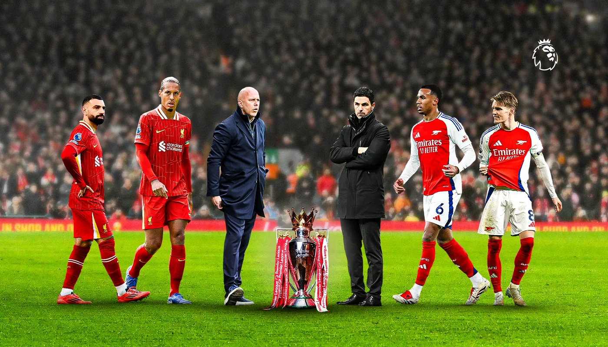

Голы Собослаи и Мака Аллистера принесли «красным» победу со счетом 2:0
«Ливерпуль» поднялся на 13 очков и возглавил турнирную таблицу Премьер-лиги, одержав победу со счетом 2:0 над «Ньюкасл Юнайтед» на ликующем стадионе «Энфилд» в среду.
Норвежец забивает 20-й гол в сезоне Премьер-лиги, а «Сити» возвращает себе четвертое место после победы со счетом 1:0
Эрлинг Холанд забил единственный гол, благодаря чему «Манчестер Сити» укрепил свои надежды на место в четверке сильнейших, одержав в среду выездную победу со счетом 1:0 над «Тоттенхэм Хотспур» .

Гонка за титул: как обстоят дела после матчей в середине недели
Футбольный обозреватель Алекс Кебл оценивает гонку за титул 2024/25 после решающей серии матчей в середине недели, в которых «Ливерпуль» обыграл «Ньюкасл Юнайтед», а «Арсенал» сыграл вничью с «Ноттингем Форест».